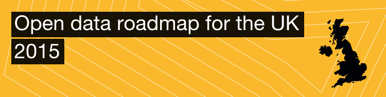

How will the UK’s new government use open data?
In the past week, each of the major UK political parties has released their party manifestos, setting out their vision, if elected, for the next UK Government.
We had a look through each manifesto – from Labour, the Conservatives, the Liberal Democrats, the Greens, SNP, Plaid Cymru and UKIP – to see what they had to say about open data.
Our findings? That open data – both as an explicit concept and part of a suite of tools to help government make and deliver its policies – will play a key role in any future UK Government.
We published short summaries of how the manifestos address open data here. For information about open government in the party manifestos more generally, take a look at the The Open Government Partnership UK’s excellent summaries.
A few key findings emerged from our reading of the manifestos:
The major parties share an awareness of the importance of open data...
Labour reaffirms its commitment to ‘open data by default’ in its manifesto, as part of its vision for a more inclusive, transparent and accountable digital government. For the Conservatives, open data is highlighted as part of their approach to transparent government over the past 5 years in office.
The Liberal Democrats commit to releasing government data sets that can facilitate growth in open and accessible formats, while the Greens oppose the privatisation of data held by government that should be open to all.
In their Digital Bill of Rights – released nearly a week ahead of the party’s manifesto – the Liberal Democrats emphasise open data as a key part of how government-created or government-funded data is made available to the public:
"We are committed to ensuring that public services are responsive to the people they serve, and that policy-making is based on good evidence. It is therefore vitally important to unlock the value that lies in public datasets, so that consumers can benefit from the development of innovative products and services, and citizens can hold their public services to account." [12]
...but could go much further.
Chair of the Open Data Institute, Sir Nigel Shadbolt, has warned against UK Government complacency when it comes to open data. The ODI’s 'Open data roadmap for the UK', released in late 2014, emphasises the need to continue to make progress on open data: cementing it as part of government "business as usual", releasing more data of social, environmental and economic value and making sure open data is being used by government to inform its decisions.
While almost all of the manifestos reflect an awareness of the importance of open data, none go into detail on how open data publication and use will be advanced if if they were to win government.
Despite that, there’s a lot in the manifestos that is positive for open data
Have the party manifestos mentioned open data enough? ‘Open data’ is ultimately one way of describing making information more available and accessible for everyone. Almost all of the manifestos highlight the importance of publishing more information to help government make decisions, and to improve transparency and accountability.
This is a significant evolution of thinking about how government uses and publishes information, across the political spectrum. At the 2010 election, only the Conservatives’ manifesto mentioned more accessibility of information as a driver of government transparency and accountability. At the 2005 election, it didn’t feature in the manifestos at all.
Across the 2015 manifestos, commitments are made to publishing and using more information about public procurement, overseas tax and company details, healthcare, crime and education, energy, diversity, food, gender pay gaps, defence spending and land ownership to inform government policy-making and the actions of companies and citizens.
This is ultimately what open data is about: not simply releasing lots of data, but using it to help make decisions, generate new insights and improve services.

Our job will be to draw the link between ‘more publicly available information’ and open data
We need to make sure that when the next government publishes information to help it make and deliver its policies, it is published as machine-readable data with an open licence.
Over the next 12 months, the ODI will continue to promote open data to the new government and highlight how its application can help solve social, environmental and economic challenges. In particular, we will:
continue to expand on our 'Open data roadmap for the UK'
create opportunities for the new government to hear from our community of members, startups, researchers, and stakeholders about impacts and opportunities being generated using open data
deliver training and tools to help organisations and individuals publish and use open data to create impact
Do you have ideas or insights you’d like to share about open data in government? Share your thoughts in the comments, or tweet us at @ODIHQ